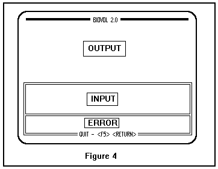

Running the Program
The Main Menu
There are four options available in the main menu:
- Batch
-
in batch mode an existing data file is processed, with
output being sent to either an output file, to a printer or the
screen only. For large data sets this is most likely the most efficient
method, data files are compiled prior to running the program and then
processed at one time.
- Interactive
-
in interactive mode, the user can directly input cell measurements.
Output can be directed to either to an output file, to a
printer or the screen only. The user is prompted for all the requisite data to
perform the calculations. A menu of shape codes is also provided.
- Shell
-
this allows the user to temporarily return to the operating
system. The user then has the ability to use DOS commands (such as
DIR to locate files) or run other programs (i.e. modify a data file using a
text editor).
- Exit
-
this terminates the program and returns control to the operating system.
Screen Layout
Once either of the operating modes has been chosen (batch or
interactive) the work area screen (Fig 4.) is displayed. For both operating
modes the screen layout is similar. The top "window" is used to display
output. Results are displayed on the screen for both file and printer output in
addition to screen only operation. The middle region of the screen ( the upper
boxed "window" is reserved for user input. For batch operation prompts for
data file name and output mode are displayed here. In interactive mode
prompts for cell information ( taxa name, shape code, measurement etc.) are
displayed here. Additionally a menu of shape codes is displayed on the right
side. The lower most "window" is reserved for the display of error messages,
identifying the nature of the problem as well as instructions on how to recover
from the error. The bottom line of the display is the message QUIT
- < F5 > < Return > , by pressing the F5 key and then
"return " the user leaves the work area and returns to the main menu.

Batch operation
The data file
BIOVOL requires that the data file be a comma delimited ASCII file. If
you use either a word processor or spreadsheet to compile the data file be
sure to save the file in an ASCII format before running BIOVOL. Each line
needs to end with a carriage return/line feed < CR/LF >
character and the last line of the file must end with an end-of file
< EOF > character.
Only the first eight characters of the taxa name will be retained in the
output, so make sure that the most critical ID information is present in this
space.
The output file
The output file will be saved at the same location as the data file (drive/
directory). The filename will be the same as the data file with the file
type as .LST (i. e., the data file C:\BVDEMO.DAT will
produce a file named C:\BVDEMO.LST). Columns are labelled on the
first line of the file, in the same sequence as they appear on the screen
(Taxa , biovolume, surface area and surface-to-volume ratio)
Interactive operation
Data input
Prompts for the required information will be displayed in the input area.
Only the first eight characters of the taxa name will be retained in the output,
so make sure that the most critical ID information is present in this space.
The output file
When prompted for an output file name, provide only
< drive >:\< directory....>\< filename > , DO
NOT
include filetype, the output filetype is set by BIOVOL as .LST.
(i. e. a "legal" response is C:\BVDEMO , this will
result in an output file named C:\BVDEMO.LST ).